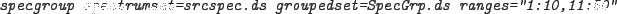
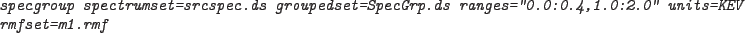

which will produce two groups: the first from spectral channel 1 to spectral channel 10 and the second from spectral channel 11 to 50. The rest of the spectrum will remain ungrouped. Note that the spectral channel refers to the channel number contained in the CHANNEL array in the spectrum. This is not necessarily the same as the bin number of the spectrum.
The ranges can also be defined in photon energy units (KEV), e.g.:

which will produce a group containing spectral bins with central energies between 0.0 and 0.4 keV and another with central energies between 1.0 and 2.0 keV. The conversion between spectral channel and photon energy is given in the EBOUNDS extension of an OGIP compliant response file (see George et al....). Therefore if ranges are given in keV a redistribution matrix (RMF) must be supplied otherwise the error, NoRMFsupplied will be issued.
This option may be used in conjunction with the regular binning option and/or one of the statistical options. In which case the range grouping is applied first and the subequent options are applied to the remaining ungrouped bins.